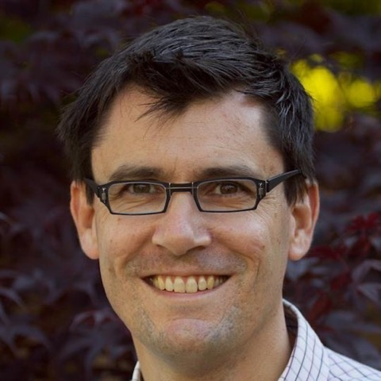
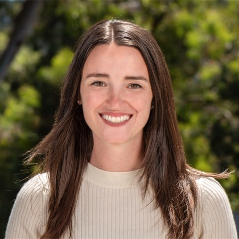
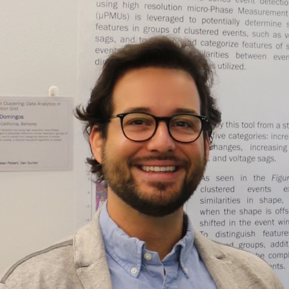

Watch lecture
Introduction: Contemporary Issues in Power Systems
Daniel Arnold
Lead Power Grid Engineer · Lawrence Livermore National Lab
Energy Engineering Seminar · Fall 2026 · ENGIN 93 / CIVENG 298
The energy system behind the cloud.
AI and cloud computing are driving a surge in electricity demand, and data centers are where that demand lands. Siting and powering these facilities raises hard engineering questions: how to connect them to the grid, how to cool them, how much water they use, what they are built from, and how to secure them. This semester, researchers and practitioners from Berkeley, the national labs and industry take the data center apart one layer at a time, from power systems and planning to cooling, water, concrete and cybersecurity.
Daniel Arnold
Lead Power Grid Engineer · Lawrence Livermore National Lab

Michael Wetter
Computational Senior Scientist · Lawrence Berkeley National Lab

Sarah Smith
Research Scientist · Lawrence Berkeley National Lab
Will McNeil
Stanford Energy Postdoctoral Fellow · Stanford University
Emilia Chojkiewicz
PhD Candidate · UC BerkeleyEnergy Resources Group
Anna Scaglione
Professor · Cornell Tech

Armando Domingos
Infrastructure Strategy Lead · Meta
Haitam Laarabi
Project Scientist · Lawrence Berkeley National Lab
Franco Zunino
Assistant Professor · UC BerkeleyCivil & Environmental Engineering
Jenn Stokes-Draut
Staff Scientist · Lawrence Berkeley National Lab
Ethan Brownell
Systems Analyst · Lawrence Livermore National Lab
Colin Ponce
Computational Mathematician · Lawrence Livermore National Lab
Robert Pilawa
Professor · UC BerkeleyElectrical Engineering & Computer Science
Lead Power Grid Engineer, Lawrence Livermore National Lab
Adjunct Professor, Civil & Environmental Engineering, UC Berkeley
Daniel Arnold leads power grid engineering at Lawrence Livermore National Laboratory and teaches at Berkeley as an Adjunct Professor. He opens this semester's series with an introduction to contemporary issues in power systems, the context for everything that follows.
Professor, Civil & Environmental Engineering
UC Berkeley
Scott Moura studies the control and optimization of energy systems, especially batteries, electric vehicles and the integration of renewable energy into the grid. He directs the Energy, Controls & Applications Lab (eCAL) at Berkeley.
Get an email when new lectures are posted and when we announce future seminars and events. Occasional emails only, and never shared.